Activation Functions
Characteristics of good activation function
Nonlinear
When the activation function is non-linear, then a two-layer neural network can be proven to be a universal function approximator
a universal function is a computable function capable of calculating any other computable function If we use Linear functions throughout in network then the network is the same as perceptron (single layer network)
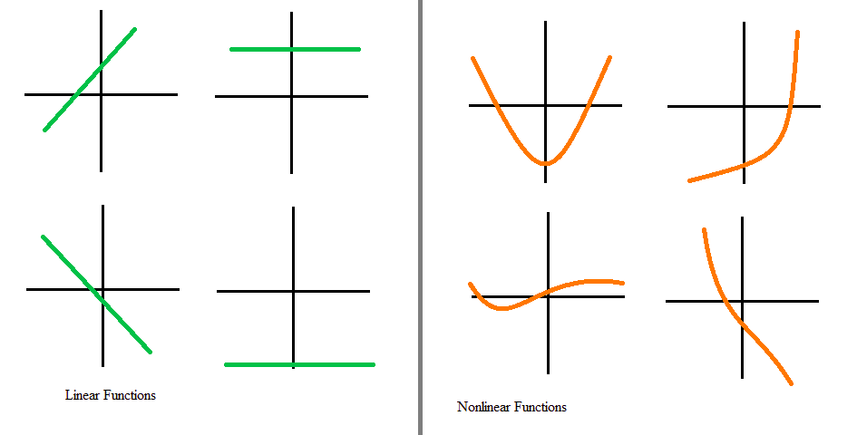
Range
When the range is finite, gradient-based optimization methods are more stable because it limits the weights. When the range is infinite, gradient-based optimization methods are more efficient but for smaller learning rates. because weights updation doesn't have a limit on the activation function. You can refer to article in the above list. You will find, weight updation is dependent on the activation function also.
Range and Domain: The domain of a function is the set of all values for which the function is defined, and the range of the function is the set of all values that takes.
For example take function which is sine function. Its range is and domain is
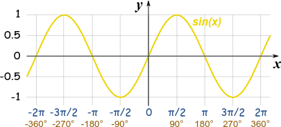
Continuously differentiable
A continuously differentiable function is a function whose derivative function is also continuous in it's domain. Youtube: Continuity Basic Introduction, Point, Infinite, & Jump Discontinuity, Removable & Nonremovable
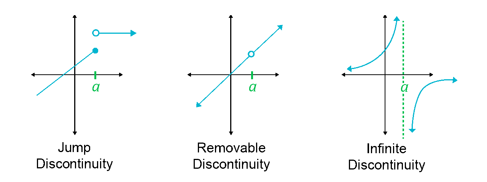
In the below image, the function is a binary step function and it is discontinuous at and it is jump discontinuity. As it is not differentiable at , so gradient-based methods can make no progress with it.
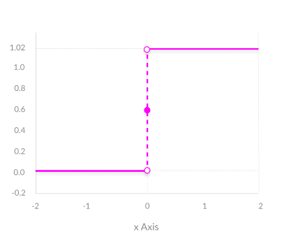
Monotonic
In calculus, a function defined on a subset of the real numbers with real values is called monotonic if and only if it is either entirely non-increasing, or entirely non-decreasing.
Identity Function is monotonic function and is non-monotonic function.
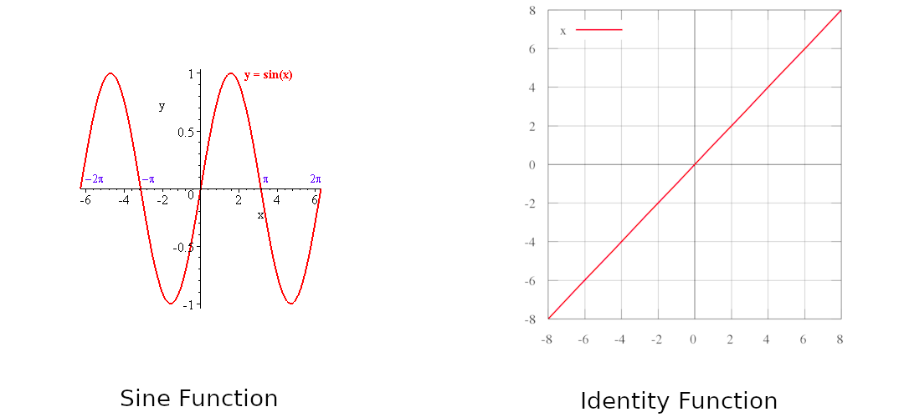
When the activation function is monotonic, the error surface associated with a single-layer model is guaranteed to be convex.
Monotonic Derivative
Smooth functions with a monotonic derivative have been shown to generalize better in some cases. I think it's because of the local minima problem. While training sometimes networks are stuck at local minima instead of global minima.
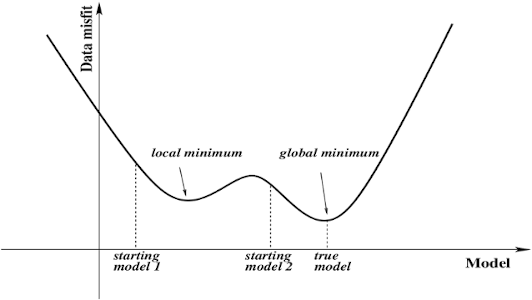
Approximates identity near the origin
Usually, the weights and bias are initialized with values close to zero by the gradient descent method. Consequently, or in our case (Check Above Series) will be close to zero.
If approximates the identity function near zero, its gradient will be approximately equal to its input.
In other words, . In terms of gradient descend, it is a strong gradient that helps the training algorithm to converge faster.
Activation Functions
From onward is equation of activation function and is derivative of that activation function which is required during backpropagation. We will see the most used activation function and you can find others on Wikipedia page Link. All function graphs are taken from book named Guide to Convolutional Neural Networks: A Practical Application to Traffic-Sign Detection and Classification written by Aghdam, Hamed Habibi and Heravi, Elnaz Jahani
1. Sigmoid
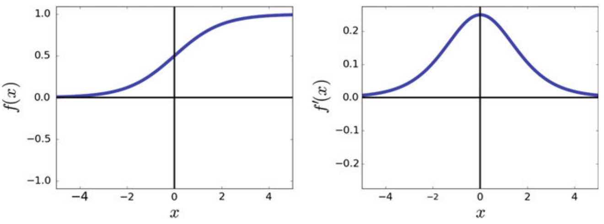
Pros:
- It is nonlinear, so it can be used to activate hidden layers in a neural network
- It is differentiable everywhere, so gradient-based backpropagation can be used with it
Cons:
- The gradient for inputs that are far from the origin is near zero, so gradient-based learning is slow for saturated neurons using sigmoid i.e. vanishing gradients problem
- When used as the final activation in a classifier, the sum of all classes doesn’t necessarily total 1
- For these reasons, the sigmoid activation function is not used in deep architectures since training the network become nearly impossible
| Characteristic | Yes/No |
|---|---|
| Range | |
| Order of Continuity | |
| Monotonic | Yes |
| Monotonic Derivative | No |
| Approximates Identity near origin | No |
2. Hyperbolic Tangent
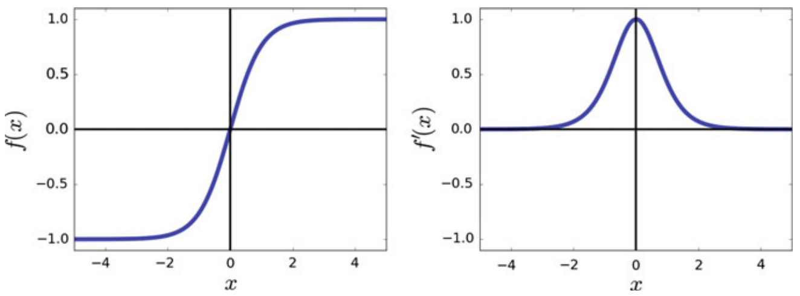
The hyperbolic tangent activation function is in fact a rescaled version of the sigmoid function.
Pros:
- It is nonlinear, so it can be used to activate hidden layers in a neural network
- It is differentiable everywhere, so gradient-based backpropagation can be used with it
- It is preferred over the sigmoid function because it approximates the identity function near the origin
Cons:
- As increases, it may suffer from vanishing gradient problems like sigmoid.
- When used as the final activation in a classifier, the sum of all classes doesn’t necessarily total 1.
| Characteristic | Yes/No |
|---|---|
| Range | |
| Order of Continuity | |
| Monotonic | Yes |
| Monotonic Derivative | No |
| Approximates Identity near origin | Yes |
3. Rectified Linear Unit
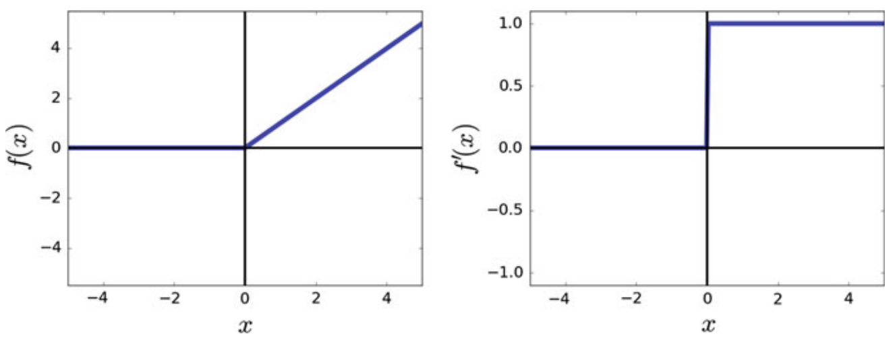
Pros:
- Computationally very efficient
- Its derivative in R+ is always 1 and it does not saturate in R+ (No vanishing gradient problem)
- Good choice for deep networks
- The problem of the dead neuron may affect learning but it makes it more efficient at the time of inference because we can remove these dead neurons. Cons:
- The function does not approximate the identity function near the origin.
- It may produce dead neurons. A dead neuron always returns 0 for every sample in the dataset. This affects the accuracy of the model.
This happens because the weight of dead neuron have been adjusted such that for the neuron is always negative.
| Characteristic | Yes/No |
|---|---|
| Range | |
| Order of Continuity | |
| Monotonic | Yes |
| Monotonic Derivative | Yes |
| Approximates Identity near origin | No |
4. Leaky Rectified Linear Unit
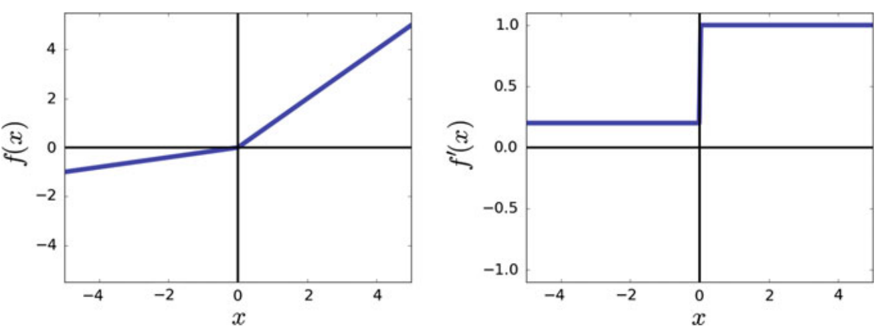
In practice, leaky ReLU and ReLU may produce similar results. This might be due to the fact that the positive region of these function is identical. 0.01 can be changed with other values between
Pros:
- As its gradient does not vanish in negative region as opposed to ReLU, it solves the problem of dead neuron.
Cons:
| Characteristic | Yes/No |
|---|---|
| Range | |
| Order of Continuity | |
| Monotonic | Yes |
| Monotonic Derivative | Yes |
| Approximates Identity near origin | No |
5. Parameterized Rectified Linear Unit
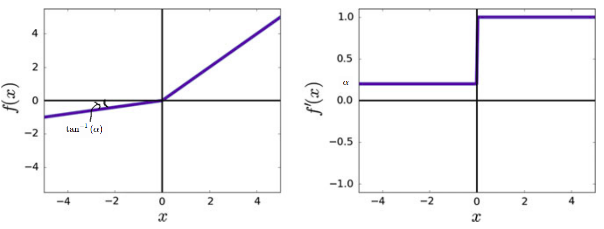
It is the same as Leaky ReLU but is a learnable parameter that can be learned from data.
Parameter Updation
To update , we need gradient of activation function with respect to .
| Characteristic | Yes/No |
|---|---|
| Range | |
| Order of Continuity | |
| Monotonic | Yes |
| Monotonic Derivative | Yes, if |
| Approximates Identity near origin | Yes, if |
6. Softsign
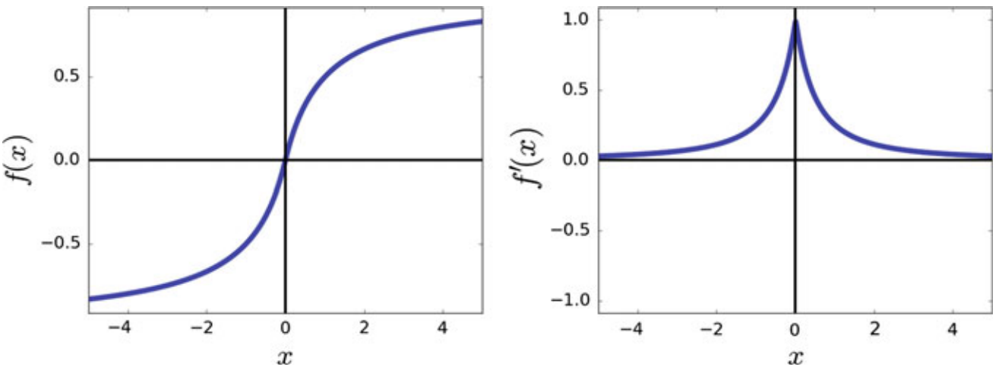
Pros:
- The function is equal to zero at origin and its derivative at origin is equal to 1. Therefore, it approximates the identity function at the origin.
- Comparing the function and its derivative with a hyperbolic tangent, we observe that it also saturates as increases. However, the saturation ratio of the softsign function is less than the hyperbolic tangent function which is a desirable property
- the gradient of the softsign function near origin drops with a greater ratio compared with the hyperbolic tangent.
- In terms of computational complexity, softsign requires less computation than the hyperbolic tangent function.
Cons:
- saturates as increases
| Characteristic | Yes/No |
|---|---|
| Range | |
| Order of Continuity | |
| Monotonic | Yes |
| Monotonic Derivative | No |
| Approximates Identity near origin | Yes |
7. Softplus
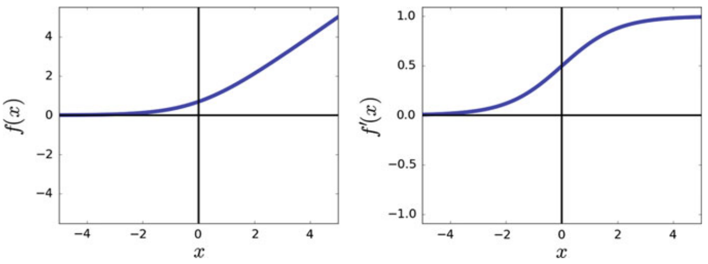
Pros:
- In contrast to the ReLU which is not differentiable at origin, the softplus function is differentiable everywhere
- The derivative of the softplus function is the sigmoid function which means the range of derivative is
Cons:
- the derivative of softplus is also a smooth function that saturates as increases
| Characteristic | Yes/No |
|---|---|
| Range | |
| Order of Continuity | |
| Monotonic | Yes |
| Monotonic Derivative | Yes |
| Approximates Identity near origin | No |